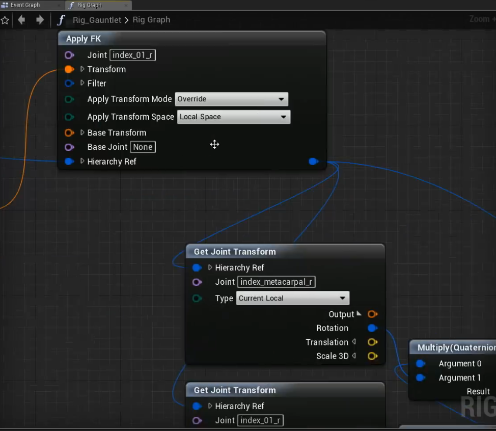

What is Control Rig?
Control rig plugin has been in UE4 for quite a long time. But it did not arose my interest until I watched Wes Bunn’s session in GDC 2019. Actually I was about to build a control rig system and had already been working on it for several weeks. And the control rig system just came out… Complex feeling, huh?
Since animation blueprint has a strong coupling with animation skeleton, and this makes it hard for users to control the skeleton bones using controllers outside skeleton. Compared with Unity animation playable pipeline, animation blueprint is not that convenient to control skeleton bones.
Control rig makes it possible for us to to drive skeleton bones outside animation blueprint. We can create customized controllers, and define our own constraints to control bones. It is just amazing!

Deeper Thinking about Control Rig
The Ultimate Problem
So the ultimate problem, is that unlike Unity, which is compatible with different skeletons, animation blueprint in UE4 only works with the specific skeletons. If we want to add another bone to the skeleton, lots of work needs to be done.
I’ll get into this problem with the issue that Wes mentioned in his session.
Consider a character with a bare hand:
We are very sure that in the very beginning of the development of fortnite, no one would think about adding some extra bones under the character’s hand for her claw, like this:

Every one was happy with the skeleton, and has created lots of animations using this skeleton. But some day, a designer came and tell the programmer: We are gonna add a claw to the character!
Boom!!!
If every animation needs to be re-created, that means so much work, and it is the answer that no one wants to hear.
But why don’t we drive the claw bones using the character’s finger bones?
And this is how Control Rig works!
This article would only show the problem of original animation pipeline. Would like to explain how to build a control rig to solve this problem.
Anyway, we can use control rig to drive skeleton bones outside animation blueprint. And this is just amazing!
A Boon for Riggers
Our old animation pipeline is like: Riggers setup character constraints inside Maya, and animators use this rigged character to produce raw animation, and finally animation programmers use these raw animation materials to build a new animation pipeline inside UE4!
But the problem is, animation programmers are not professional when dealing with character animation! It is a rigger that knows exactly what drives a bone to a location he desired.
Riggers and animators always play with constraints and controllers. It would be a huge waste if their work are limited inside DCC tools. In my opinion, it would be a great idea for animators&riggers to setup constraints in UE4.
Something Still Needs to be Done
Currently I use UE4.22.1 and more than a lot improvement on Control Rig needs to be done. And here is what I care most:
How to drive controllers
Wes use bone transform evaluated from animation blueprint to drive controller transform. But sometimes we need to drive controller transform directly. I modified the plugin code to make it possible to drive controllers, but still not convenient, though.Control Rig event graph does not work
We can setup event graph in Control Rig already, but still cannot call events or interface functions in Control Rig. That is terrible…Nodes are not powerful enough
I have used control rig for quite a few days. And I have to create some customized nodes for my purposes. It might be someday to make it open-source…